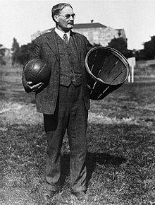

El baloncesto, basquetbol o básquetbol (del inglés basketball; de basket, 'canasta', y ball, 'pelota') o simplemente básquet, es un deporte de equipo, jugado entre dos conjuntos de cinco jugadores cada uno durante cuatro períodos o cuartos de diez o doce minutos cada uno.
El objetivo del equipo es anotar puntos introduciendo un balón por la canasta, un aro a 3,05 metros sobre la superficie de la pista de juego del que cuelga una red. La puntuación por cada canasta o cesta es de dos o tres puntos, dependiendo de la posición desde la que se efectúa el tiro a canasta, o de uno, si se trata de un tiro libre por una falta de un jugador contrario. El equipo ganador es el que obtiene el mayor número de puntos.
El baloncesto nació como una solución a la necesidad de realizar alguna actividad deportiva durante el invierno, en la escuela de la YMCA (Young Men's Christian Association) de Springfield, Massachusetts.5 James Naismith, profesor de educación física en la escuela, ideó el baloncesto como juego de pelota basado en trece reglas. El juego se extendió por Estados Unidos, Canadá y el resto del mundo, experimentando algunas modificaciones durante el curso del tiempo. Muchas de las reglas iniciales se mantienen hasta la actualidad, aunque algunos aspectos del juego tuvieron que modificarse para responder a desarrollos en la técnica de los jugadores y aspectos no previstos en el desarrollo del juego, normalmente como consecuencia de la manipulación de las reglas por parte de los entrenadores y jugadores para inclinar los partidos.
Base: También llamado playmaker ("creador de juego", "armador"). Normalmente el jugador más bajo del equipo es base que significa que sube el balón y debe tener buen manejo del balón, también tiene que tener buen manejo para el pase. En ataque sube la pelota hasta el campo contrario y dirige el juego ofensivo de su equipo, mandando el sistema de juego. Sus características recomendables son un buen manejo de balón, visión de juego, capacidad de dar buenos pases, buena velocidad y un acertado tiro exterior. En los bases son tan apreciadas las asistencias como los puntos anotados, aunque un buen jugador debe conseguir ambas cosas. En defensa han de dificultar la subida del balón del base contrario, tapar las líneas de pase y estar atento a recoger los rebotes largos. Normalmente estos jugadores no son de una elevada estatura, pues lo realmente importante es la capacidad organizativa y de dirección de juego. Conocidos como 1 en la terminología empleada por los entrenadores.
Escolta: Jugador normalmente más bajo, rápido y ágil que el resto, exceptuando a veces el base. Debe aportar puntos al equipo, con un buen tiro incluyendo el tiro de tres puntos, un buen dominio del balón y una gran capacidad de entrar a canasta. Conocidos como 2 en la terminología empleada por los entrenadores.
Alero: Es generalmente de una altura intermedia entre los jugadores interiores y los exteriores. Su juego está equilibrado entre la fuerza y el tiro. Es un puesto importante, por su capacidad de combinar altura con velocidad. En ataque debe ser buen tirador de tres puntos y saber culminar una entrada hasta debajo del tablero contrario, son piezas básicas en lanzar el contraataque y suelen culminar la mayoría de ellos. Conocidos como 3 en la terminología empleada por los entrenadores.
Ala-Pívot: Es un rol más físico que el del alero, en muchos casos con un juego muy similar al pívot. Obtiene la mayoría de los puntos en el poste bajo, aunque algunos pueden llegar a convertirse en tiradores muy efectivos. Sirven de ayuda al pívot para impedir el juego interior del equipo contrario, y cierran el rebote. Conocidos como 4 en la terminología empleada por los entrenadores.
Pívot: Suelen ser los jugadores de mayor altura del equipo, y los más fuertes muscularmente. Normalmente, el pívot debe usar su altura y su potencia jugando cerca del aro. Un pívot que conjunte fuerza con agilidad es una pieza fundamental para su equipo. Son los jugadores que más sorprenden a los aficionados noveles, por su gran altura. En Europa el pívot medio ha evolucionado más y es capaz de abrirse hacia afuera para tirar. En defensa buscan recoger el rebote corto, impedir el juego interior del equipo contrario y taponar las entradas de jugadores exteriores. Conocidos como 5 en la terminología empleada por los entrenadores.

 Michael Jordan
Michael Jordan
 Kareem Abdul-Jabbar
Kareem Abdul-Jabbar